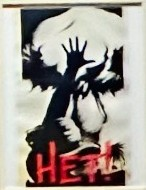

← Retour au mur
Affiche 18

Titre
УРАЛ — ФРОНТУ (Ural frontou)
Artiste
Pyotr KARACHENTSOV
Date
1942
Texte / traduction
« L’Oural au front ». L’Oural est présenté comme une arme industrielle décisive, transformant sa production en force directe pour le front contre l’Allemagne nazie.